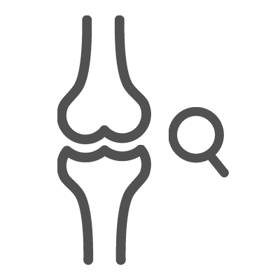

<div class="pages">
	<div data-page="projects" class="page no-toolbar no-navbar">
		<div class="page-content">
			<div class="navbarpages">
				<div class="nav_left_logo"><a href="index.html"></a></div>
				<div class="nav_right_button"><a href="menu.html"></a><a href="#" class="back" data-force="true"></a></div>
			</div>
			<div id="pages_maincontent">
				<h2 class="page_title">Definición y generalidades</h2>
				<div class="page_content">
					<blockquote> Espondiloartritis </blockquote>
					<p>Las espondiloartritis son un grupo de enfermedades con características clínicas, genéticas y fisiopatológicas similares. El término abarca un espectro de presentación clínica que incluye: compromiso del esqueleto axial (articulaciones sacroiliacas y columna), artritis periférica, dactilitis, entesitis, uveítis anterior, asociación con psoriasis o con enfermedad inflamatoria intestinal y presencia de HLA-B27. La definición de espondiloartritis se refiere a una de las siguientes enfermedades (ver tabla 1). </p>
					<ul class="responsive_table">
						<li class="table_row">
							<div class="table_section_70">Espondiloartritis</div>
						</li>
						<li class="table_row">
							<div class="table_section_70">Espondilitis anquilosante</div>
						</li>
						<li class="table_row">
							<div class="table_section_70">Artritis psoriásica</div>
						</li>
						<li class="table_row">
							<div class="table_section_70">Artritis reactiva</div>
						</li>
						<li class="table_row">
							<div class="table_section_70">Espondilitis asociada a enfermedad inflamatoria intestinal</div>
						</li>
						<li class="table_row">
							<div class="table_section_70">Espondiloartritis no diferenciada</div>
						</li>
					</ul>
					<p>Tabla 1</p>
					<h3>Epidemiología de las espondiloartritis:</h3>
					<p>La prevalencia de las espondiloartritis varía en forma considerable entre diferentes poblaciones, lo cual puede explicarse en gran parte por la prevalencia del HLA-B27. En la tabla 2 se resumen los principales datos de prevalencia de HLA-B27 en diferentes poblaciones, en datos obtenidos de registros nacionales. </p>
					<ul class="responsive_table">
						<li class="table_row">
							<div class="table_section_70">Población</div>
							<div class="table_section_14">Prevalencia</div>
						</li>
						<li class="table_row">
							<div class="table_section_70">Tribu Pawala, Nueva Guinea</div>
							<div class="table_section_14">53%</div>
						</li>
						<li class="table_row">
							<div class="table_section_70">Población indígena Haida en islas Queen Charlotte, Canada.</div>
							<div class="table_section_14">50%</div>
						</li>
						<li class="table_row">
							<div class="table_section_70">Esquimales Chukotka, Rusia Oriental</div>
							<div class="table_section_14">40%</div>
						</li>
						<li class="table_row">
							<div class="table_section_70">Paises escandinavos</div>
							<div class="table_section_14">15-25%</div>
						</li>
						<li class="table_row">
							<div class="table_section_70">Europa occidental</div>
							<div class="table_section_14">4-13%</div>
						</li>
						<li class="table_row">
							<div class="table_section_70">Paises árabes</div>
							<div class="table_section_14">2-5%</div>
						</li>
						<li class="table_row">
							<div class="table_section_70">Japón</div>
							<div class="table_section_14">1%</div>
						</li>
					</ul>
					<p>Tabla 2. Prevalencia de HLA-B27 en diferentes poblaciones</p>
					<p>En América, se han obtenido datos de grupos de pacientes en regiones específicas sin ser como tal registros nacionales. Se han obtenido datos de prevalencia en Estados Unidos (6,1%), Argentina (5,2%), Colombia (4,5%), Venezuela (4,2%) y Chile (4%).  El HLA-B27 es virtualmente ausente en indígenas suramericanos, aborígenes australianos y negros africanos.</p>
					<p>La relación entre la presencia de HLA-B27 y espondiloartritis es evidente, en especial para el caso de espondilitis anquilosante. Aunque la proporción de pacientes con espondiloartritis positivos para HLA-B27 varía de acuerdo a la población estudiada, en la tabla 3 se resumen las prevalencias diferenciadas para HLA-B27 en cada uno de los subgrupos de espondiloartritis.</p>
					<ul class="responsive_table">
						<li class="table_row">
							<div class="table_section_70">Tipo de espondiloartritis</div>
							<div class="table_section_14">Prevalencia de la HLA-B27</div>
						</li>
						<li class="table_row">
							<div class="table_section_70">Espondilitis anquilosante</div>
							<div class="table_section_14">90%</div>
						</li>
						<li class="table_row">
							<div class="table_section_70">Artritis psoriásica axial</div>
							<div class="table_section_14">60-70%</div>
						</li>
						<li class="table_row">
							<div class="table_section_70">Artritis reactiva</div>
							<div class="table_section_14">50%</div>
						</li>
						<li class="table_row">
							<div class="table_section_70">Artritis psoriásica periférica</div>
							<div class="table_section_14">25%</div>
						</li>
						<li class="table_row">
							<div class="table_section_70">Asociada a enfermedad inflamatoria intestinal</div>
							<div class="table_section_14">60%</div>
						</li>
					</ul>
					<p>Tabla 3. Prevalencia de HLA-B27 en pacientes con espondioartritis</p>
					<h3>Epidemiología de las espondiloartritis:</h3>
					<p>Dependiendo de las características clínicas predominantes, las espondiloartritis se pueden clasificar de acuerdo al tipo de compromiso en:</p>
					<ul class="simple_list">
						<li><strong>Espondiloartritis axial:</strong> Caracterizada por compromiso de las articulaciones sacroiliacas y/o de la columna vertebral, como sucede en la espondilitis anquilosante y en la espondiloartritis no radiográfica </li>
						<li><strong>Espondiloartritis periférica:</strong> Incluye el compromiso articular periférico (usualmente mono u oligoarticular, asimétrico, de articulaciones grandes en miembros inferiores), entesitis y dactilitis. </li>
					</ul>
					<p>Las principales características clínicas y paraclínicas de las espondiloartritis se resumen en la figura 3</p>
					<a rel="gallery-3" href="images/figura_1.jpg" title="Características de las espondiloartritis" class="swipebox"></a>
					<h3>Lecturas recomendadas</h3>
					<ol class="simple_list">
						<li>Bakland G, et al. Epidemiology of spondyloarthritis. Curr Rheumatol Rep 2013 ;15:351-8</li>
						<li>Stolwijk C, et al. Epidemiology of spondyloarthritis. Rheum Dis Clin N Am 2012;38:441-76</li>
						<li>Dhir V, et al. Psoriatic arthritis: a critical review. Clinic Rev Allerg Immunol 2013;44:141-48</li>
					</ol>
					<ul class="features_list">
						<li><a href="cont_examen.html"><span>Sig - Examen clínico osteoarticular</span></a></li>
					</ul>
					<a href="menu.html" class="button_full">Menu principal</a> </div>
			</div>
		</div>
	</div>
</div>
